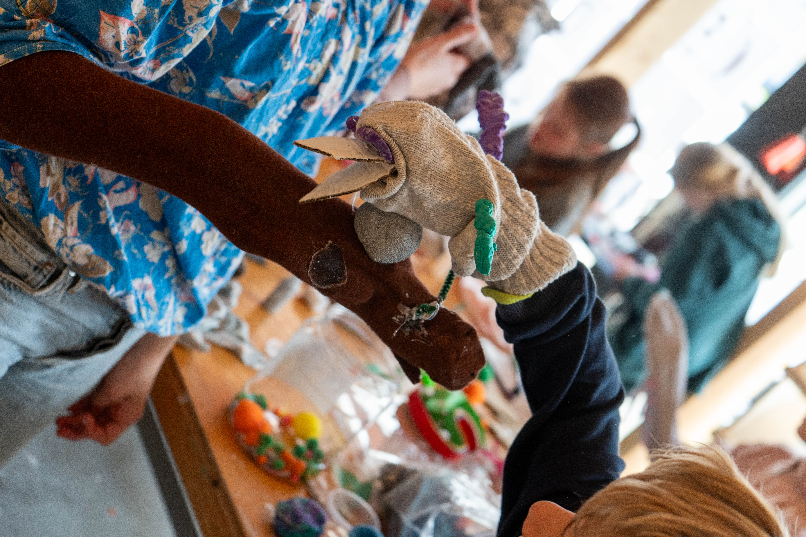

Sock Puppet Workshop
We had a fantastic workshop with the kids at NEST on March 26! The afternoon began in the exhibition space, where we performed a puppet show on a stage with a wall to hide our bodies. Laura and I played the seagull and rat, bringing the characters to life. The show truly captivated the kids, sparking their curiosity and excitement.
Following the performance, we led a “sound bath” to engage the children using their voices and body movements. Three kids stood in the middle of the circle with their eyes closed, while the rest formed a circle around them, creating a soundscape of seagulls, wind, and the sea of The Hague. We then encouraged them to think about other nuisance animals in the city, leading to another round of vocal imitations—a chorus of pests and vermin.
After the puppet show and the vocal session, we started the puppet making workshop. The kids were inspiring, focused, and bursting with creativity. By the end, we had a lot more members added to our “The Hague Nuisance Club”: pigeons, snails, cats, bees, parakeet, crows, mice…
Finally, we reached The Big Show Time—the kids took charge, performing their own puppet shows. Some told stories of love, others of fierce battles, and a few staged worm feasts! As a grand finale, Laura and I had the privilege to be in the center with our eyes closed, while the children formed a circle around us, delivering a deluxe sound bath—a glorious, chaotic symphony of screams, whispers, and animal calls.
Following the performance, we led a “sound bath” to engage the children using their voices and body movements. Three kids stood in the middle of the circle with their eyes closed, while the rest formed a circle around them, creating a soundscape of seagulls, wind, and the sea of The Hague. We then encouraged them to think about other nuisance animals in the city, leading to another round of vocal imitations—a chorus of pests and vermin.
After the puppet show and the vocal session, we started the puppet making workshop. The kids were inspiring, focused, and bursting with creativity. By the end, we had a lot more members added to our “The Hague Nuisance Club”: pigeons, snails, cats, bees, parakeet, crows, mice…
Finally, we reached The Big Show Time—the kids took charge, performing their own puppet shows. Some told stories of love, others of fierce battles, and a few staged worm feasts! As a grand finale, Laura and I had the privilege to be in the center with our eyes closed, while the children formed a circle around us, delivering a deluxe sound bath—a glorious, chaotic symphony of screams, whispers, and animal calls.
The Real Governors of The Hague
Scene: A street corner in The Hague, near a trash bin. The Seagull is picking at a trash bag. The Rat pops out of a drain.
RAT (R): "Ah-ha! Another fine morning in my underground kingdom. You there, feathered anarchist—what chaos are you causing today?"
SEAGULL (S): "Chaos? Excuse me! I’m providing a public service! Opening up these snack bags for the people! …Well, the pigeons and rats, but same thing."
R: "You call that service? I call it reckless waste management! You make a mess, I have to clean up.”
S: "Mess? Oh please, I’m liberating food from its plastic prison! You see, Ratty, food should be FREE! No borders, no bins, no bosses!”
R: "And who organizes this 'free food' system? Hmm? Who runs the pipes, the tunnels, the hidden food highways? Me! I know every crack in this city, every underground shortcut. I AM the true governor of The Hague’s infrastructure!”
S: "Oh wow, ‘Governor’? Big title for someone who eats soggy fries in the dark!”
R: "And yet, I know where all the best fries end up before you do!”
S: "How dare you! My punk philosophy is built on freedom, not waiting in line! I take what I want, when I want!”
R: "But have you ever stopped to think… you need me?"
S: "Pffft, what?"
R: "You break the bags, but it’s my network that spreads the news. If I don’t tell the others, who will show up to share? You need my connections. I need your… destructive talents."
S: "Hmm. So what you’re saying is… we’re a team?"
R: "More than that. We run this city. The humans think they do, with their ‘rules’ and ‘laws’ and ‘garbage collection schedules,’ but in the end… we are The Hague’s real rulers."
S: "And it’s about time these kids understood that, huh?"
R: "Speaking of which… hey kids! Want to see how we were made?"
S: "Yeah, come closer! See what’s under our feathers and fur… if you dare!"


